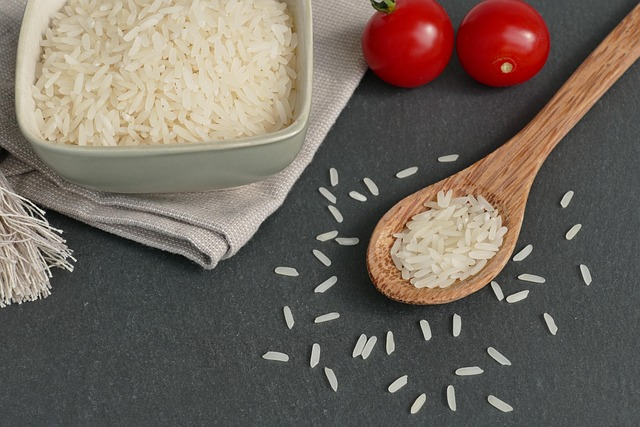
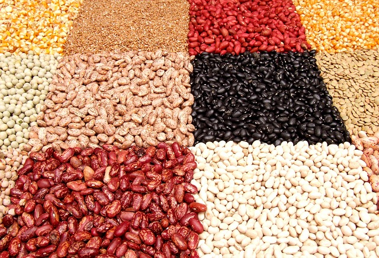
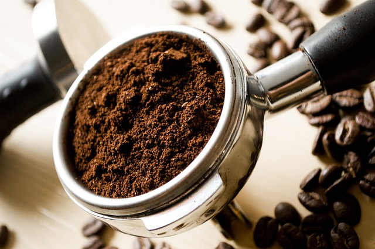

Alimentos que garantem praticidade e sabor em qualquer refeição.

Arroz
Essencial na mesa do brasileiro, o arroz é leve, nutritivo e combina com tudo. Sempre soltinho, é a base perfeita para refeições saborosas e equilibradas.

Feijão
Rico em proteínas, ferro e fibras, o feijão é tradição e sabor em cada grão. Ideal para acompanhar o arroz e garantir uma refeição completa e saudável.

Café
Aroma inconfundível e sabor marcante. O café é a energia que desperta suas manhãs e acompanha bons momentos do dia. Perfeito para começar bem ou para uma pausa especial.